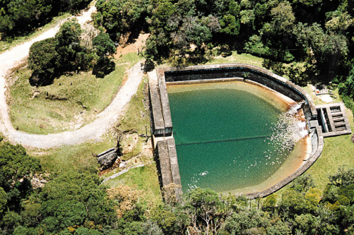
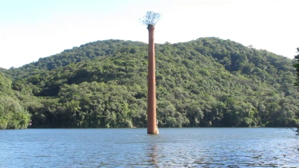
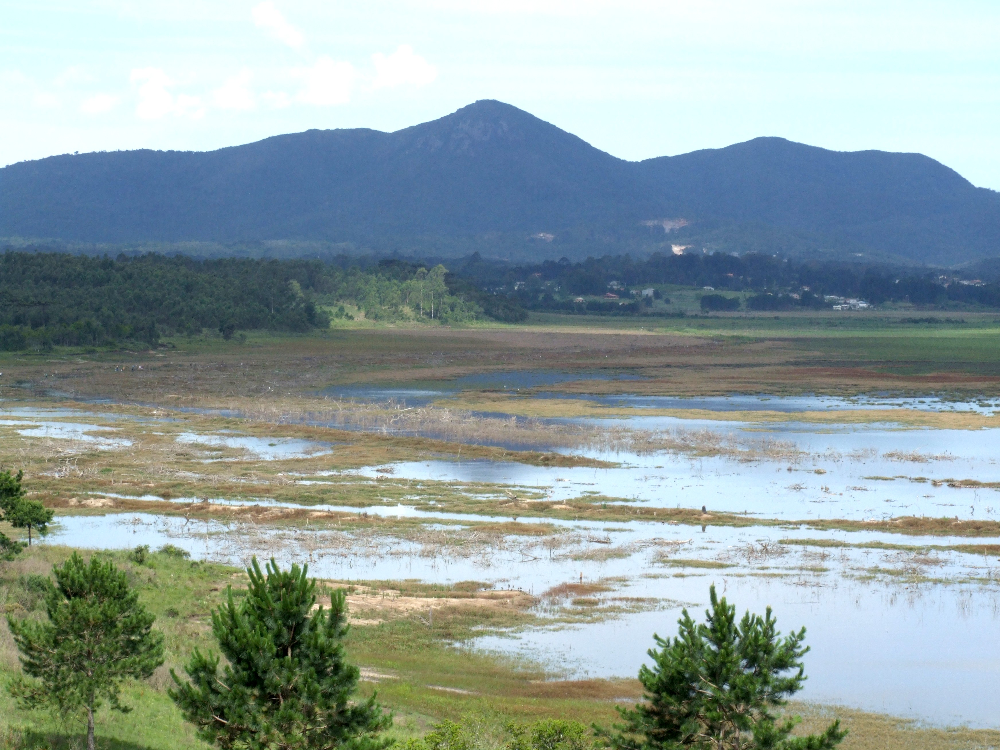

Parque das Águas Jacob Simião

Endereço: R. Barão do Cerro Azul, 265 - Centro, Piraquara - PR Horário de funcionamento: Domingo 06:00–20:00, Segunda-feira 06:00–20:00, Terça-feira 06:00–20:00, Quarta-feira 06:00–20:00, Quinta-feira 06:00–20:00, Sexta-feira 06:00–20:00, Sábado 06:00–20:00, Os horários podem ser alterados. Telefone: (41) 3590-3500
Morro do Canal
Serra: Serra do Marumbi Localização: Piraquara, Paraná, Brasil, América do Sul Latitude/Longitude: 25°30'55.73"S - 48°58'55.22"W Atividades: Caminhadas, Escaladas Altitude: 1.396 m O lugar é muito procurado para quem pretende fazer um passeio diferente no fim de semana. A duração da trilha, que é de dificuldade média, é de aproximadamente uma hora e meia. É preciso estar em boa forma física e não ter fobias de altura.
Torre Amarela

Nessa trilha se encontra um terreno bem mais acidentado com muitas raízes, e rochas, algumas altas para serem subidas com auxílio de cordas e o caminho também já não é tão demarcado, possui uma mata mais fechada onde se encontram algumas cavernas/grutas durante o percurso. Você poderá contemplar três cumes em apenas um dia nesse circuito! Torre Amarela (1.310 m de altitude).
Morro do Vigia
Nessa trilha se encontra um terreno bem mais acidentado com muitas raízes, e rochas, algumas altas para serem subidas com auxílio de cordas e o caminho também já não é tão demarcado, possui uma mata mais fechada onde se encontram algumas cavernas/grutas durante o percurso. Morro do Vigia (1369 m).
Barragem Piraquara I
Endereço: Unnamed Road, Piraquara - PR A barragem do Cayuguava foi inaugurada em 08 de março de 1979, sendo a primeira grande Barragem de acumulação de água para abastecimento público do Paraná. Ela foi construída com capacidade para 23 bilhões de litros de água, aumentando em 8,5%, ou 600 litros por segundo a oferta de água para Curitiba e Região.
Barragem Piraquara II

Endereço: R. Nova Tirol, Piraquara - PR, 83301-644. A barragem tem 17 metros de altura e 670 metros de comprimento. Nesta unidade são produzidos 1.140 litros de água por segundo, sendo que a Região Metropolitana consome cerca de oito mil litros de água por segundo. A construção da ferrovia começou em 1880, mas era considerada impossível por engenheiros europeus.
Reservatório do Carvalho
Endereço: Piraquara - PR 83305 O Reservatório do Carvalho é um ponto histórico e turístico localizado no município paranaense de Piraquara, no início da Serra do Mar, em pleno Parque Estadual Pico do Marumbi, e ali se encontra a principal nascente do Rio Iguaçu.
Mirante da Represa Piraquara 1
Em 1997, foi inaugurado o Centro de Educação Socioambiental Mananciais da Serra – CEAM em Piraquara, PR, com o intuito de promover atividades de educação socioambiental e formar uma nova consciência ambiental, voltada para a conservação e preservação do meio ambiente, em especial ao cuidado com a água. Dentro deste contexto, o objetivo do CEAM é desenvolver um conjunto de atividades que sensibilize, mobilize e promova a reflexão entre o cidadão e o ambiente, a fim de internalizar conceitos e práticas sustentáveis. Clique AQUI para localizar.
RPPN Observatório Ornitológico Nascentes do Iguaçu
Endereço: Rua dos Curiós, quadras 09, 14 e 15 - Recreio da Serra, Piraquara - PR, 83305-530 Reserva Particular do Patrimônio Natural (RPPN), localizada na vertente ocidental da Serra do Mar, limitando-se com o Parque Estadual Serra da Baitaca, em Piraquara (PR), Paraná, Brasil. Os objetivos principais desta área oficialmente protegida são a conservação da biodiversidade e a proteção do manancial de águas. Foco na busca de organizações interessadas em obter certificação ambiental, bem como de instituições acadêmicas e de pesquisa científica interessadas em investigar, mediante parcerias, sua biodiversidade.
Paraíso das Trutas
Endereço: Condomínio Ecológico - Rua dos Sabiás, Piraquara - PR, 83305-000. Telefone: (41) 3362-5395. Inteiramente preservado, o PARAÍSO DAS TRUTAS e uma reserva situada na Serra do Mar a 27 km de Curitiba e há 1000 metros de altitude, totalmente adequada ao turismo ecológico com toda infraestrutura necessária para que você e seu grupo desfrutem de uma das mais belas reservas da Mata Atlântica do Brasil.
Chaminé
Localizada dentro do complexo dos Mananciais da Serra, a trilha tem 1,5 km de extensão e leva até a área da Represa Piraquara I, onde está localizada a chaminé que fazia parte da antiga casa de máquinas que bombeava a água para a tubulação principal do Reservatório. A trilha está disponível para visitação apenas nos finais de semana de abertura do local (datas disponíveis no site da Sanepar e da Prefeitura de Piraquara).
Trilha do Cayuguava
Caminhada leve em meio à Mata Atlântica. Trilha pavimentada com pedra irregular. As visitas podem ser agendadas com antecedência através do e-mail visitas@sanepar.com.br ou pelo telefone (41) 3673-3310. Atendimento: há guiamento pelos monitores da Sanepar mediante agendamento prévio.
Floresta Estadual Metropolitana
A localização da Floresta Estadual Metropolitana, próxima ao grande centro urbano de Curitiba e ponto de passagem para a Serra do Mar e Litoral, confere a esta unidade de conservação o status de marco inicial do roteiro de visitação à Floresta Atlântica, denominado Caminhos do Mar.
Barragem do Iraí
Barragem do Iraí - desde 1998 possui área inundada de 14,2 Km², (aproximadamente 80% dentro do seu território), proporcionando uma vazão regularizada de 1.500 l/s. Clique AQUI para localizar.